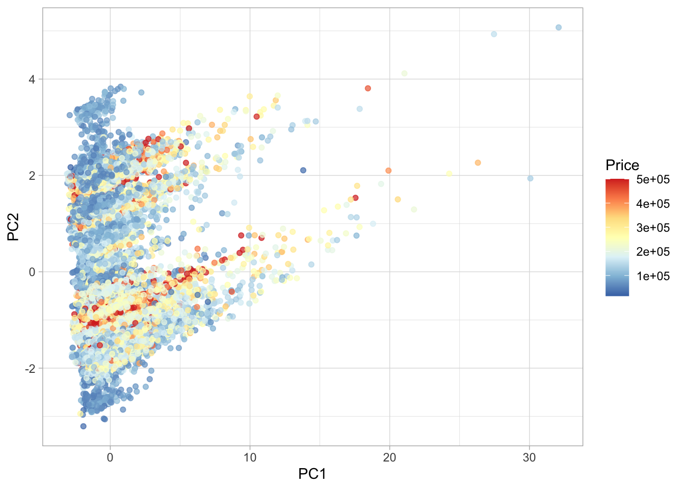
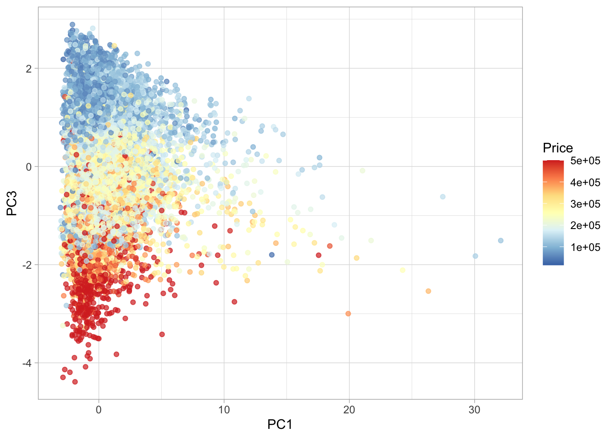
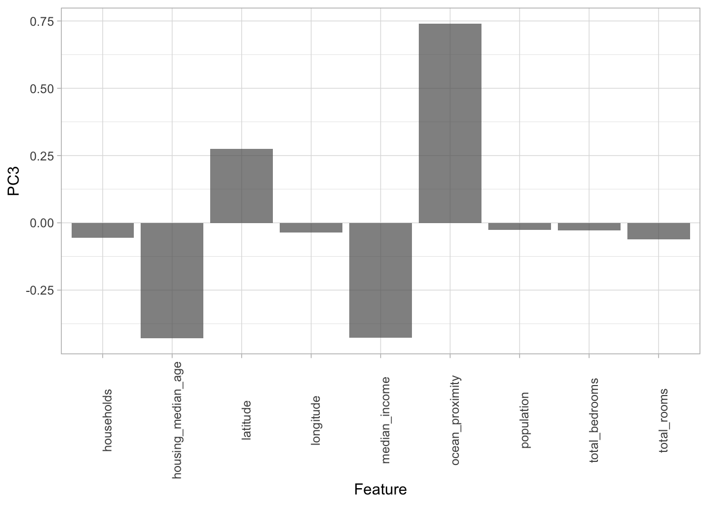

if (!require("ggplot2")) install.packages("ggplot2")Loading required package: ggplot2The aim is to apply Principal Component Analysis (PCA) to the California Housing dataset, with the goal of exploring structures and reducing dimensionality. This analysis is to identify the principal components that best capture the variability in the housing data, which can provide insights into the most influential factors affecting housing values across California.
So let’s first make sure that the required packages are installed. If they are not already installed, they will be installed.
if (!require("ggplot2")) install.packages("ggplot2")Loading required package: ggplot2library(ggplot2)
theme_set(theme_light()) # Set the default ggplot theme to the light themedf1 = read.csv ("https://raw.githubusercontent.com/ahmedmoustafa/datasets/main/housing/housing.csv")
dim(df1)[1] 20640 10head(df1)| longitude | latitude | housing_median_age | total_rooms | total_bedrooms | population | households | median_income | median_house_value | ocean_proximity |
|---|---|---|---|---|---|---|---|---|---|
| -122.23 | 37.88 | 41 | 880 | 129 | 322 | 126 | 8.3252 | 452600 | NEAR BAY |
| -122.22 | 37.86 | 21 | 7099 | 1106 | 2401 | 1138 | 8.3014 | 358500 | NEAR BAY |
| -122.24 | 37.85 | 52 | 1467 | 190 | 496 | 177 | 7.2574 | 352100 | NEAR BAY |
| -122.25 | 37.85 | 52 | 1274 | 235 | 558 | 219 | 5.6431 | 341300 | NEAR BAY |
| -122.25 | 37.85 | 52 | 1627 | 280 | 565 | 259 | 3.8462 | 342200 | NEAR BAY |
| -122.25 | 37.85 | 52 | 919 | 213 | 413 | 193 | 4.0368 | 269700 | NEAR BAY |
To ensure the quality of our analysis, it is essential to address missing values within our dataset. So, we implement a user-defined function named is_any_na(). This function will detect the presence of missing values in each row of the dataset. Identifying rows with missing data is a crucial preprocessing step, as incomplete information can significantly skew PCA results and lead to inaccurate interpretations.
is_any_na = function (x) {
return (any(is.na(x)))
}We will now utilize our user-defined function is_any_na() to systematically apply across the dataset, identifying which rows contain missing values.
missing = apply(df1, 1, is_any_na)
head(missing)[1] FALSE FALSE FALSE FALSE FALSE FALSEThe vector missing is a list of Boolean values, where TRUE entries correspond to rows in df1 that contain at least one missing (i.e., NA) entry.
Note: If we pass a list of Boolean values to the sum() function, it will return the number of TRUE values. So the number of rows in df1 with missing values:
sum(missing)[1] 207An overview of the rows with missing values
head(df1[missing, ])| longitude | latitude | housing_median_age | total_rooms | total_bedrooms | population | households | median_income | median_house_value | ocean_proximity | |
|---|---|---|---|---|---|---|---|---|---|---|
| 291 | -122.16 | 37.77 | 47 | 1256 | NA | 570 | 218 | 4.3750 | 161900 | NEAR BAY |
| 342 | -122.17 | 37.75 | 38 | 992 | NA | 732 | 259 | 1.6196 | 85100 | NEAR BAY |
| 539 | -122.28 | 37.78 | 29 | 5154 | NA | 3741 | 1273 | 2.5762 | 173400 | NEAR BAY |
| 564 | -122.24 | 37.75 | 45 | 891 | NA | 384 | 146 | 4.9489 | 247100 | NEAR BAY |
| 697 | -122.10 | 37.69 | 41 | 746 | NA | 387 | 161 | 3.9063 | 178400 | NEAR BAY |
| 739 | -122.14 | 37.67 | 37 | 3342 | NA | 1635 | 557 | 4.7933 | 186900 | NEAR BAY |
Now let’s extract the rows without any missingness by, basically, negating (with the ! operator) the missing vector i.e., switching TRUE to FALSE and switching FALSE to TRUE:
df2 = df1[!missing, ]
dim(df2)[1] 20433 10Dataframe df2 has 20433 without any missing value ✓
It is almost ready for performing the PCA analysis; however, the input matrix to the procomp() function must be numeric and our dataset contains a categorical a variable/column/feature ocean_proximity with the following values:
table(df2$ocean_proximity)| <1H OCEAN | INLAND | ISLAND | NEAR BAY | NEAR OCEAN |
|---|---|---|---|---|
| 9034 | 6496 | 5 | 2270 | 2628 |
To be able to proceed with the PCA analysis, we must to convert ocean_proximity to numeric but first we need to convert to factor with the appropriate levels the convert the factor to numeric:
df2$ocean_proximity = as.numeric(factor(df2$ocean_proximity,
levels = c("ISLAND", # The closest to the ocean
"NEAR BAY",
"NEAR OCEAN",
"<1H OCEAN",
"INLAND" # The farthest from the ocean
)
)
)
head(df2)| longitude | latitude | housing_median_age | total_rooms | total_bedrooms | population | households | median_income | median_house_value | ocean_proximity |
|---|---|---|---|---|---|---|---|---|---|
| -122.23 | 37.88 | 41 | 880 | 129 | 322 | 126 | 8.3252 | 452600 | 2 |
| -122.22 | 37.86 | 21 | 7099 | 1106 | 2401 | 1138 | 8.3014 | 358500 | 2 |
| -122.24 | 37.85 | 52 | 1467 | 190 | 496 | 177 | 7.2574 | 352100 | 2 |
| -122.25 | 37.85 | 52 | 1274 | 235 | 558 | 219 | 5.6431 | 341300 | 2 |
| -122.25 | 37.85 | 52 | 1627 | 280 | 565 | 259 | 3.8462 | 342200 | 2 |
| -122.25 | 37.85 | 52 | 919 | 213 | 413 | 193 | 4.0368 | 269700 | 2 |
Notice the converted numeric values under the ocean_proximity column.
Since the median_house_value column is the target variable in the dataset, it should not be part of the input matrix to the prcomp() function to perform the PCA analysis. Therefore, we will exclude it by referencing its column number (column #9) with the negative sign.
pca_result = prcomp(df2[, -9], scale. = TRUE)
summary(pca_result)Importance of components:
PC1 PC2 PC3 PC4 PC5 PC6 PC7
Standard deviation 1.9778 1.3968 1.1163 1.0322 0.75136 0.38516 0.25365
Proportion of Variance 0.4346 0.2168 0.1385 0.1184 0.06273 0.01648 0.00715
Cumulative Proportion 0.4346 0.6514 0.7899 0.9083 0.97100 0.98748 0.99463
PC8 PC9
Standard deviation 0.18325 0.12138
Proportion of Variance 0.00373 0.00164
Cumulative Proportion 0.99836 1.00000The above PCA summary shows that PC1 explains about 43.5% of the total variance in the dataset, followed by PC2 which explains about 21.7%, then PC3 which explains about 13.8%. And the first three PCs (PC1, PC2, and PC3) together (cumulatively) explain about 79% of the total variance in the dataset.
In this section, our goal is to explore whether there’s any inherent structure, clustering, or grouping in the transformed dataset, as represented by the projections (or scores) of the housing data onto the principal components (PCs). A key step in this exploration is overlaying the original features, particularly the target variable median_house_value, onto the transformed PCA space. This approach provides a visual representation of how the target variable relates to the principal components. To achieve this, we will construct an augmented dataframe that combines the principal components with the feature of interest, median_house_value.
pca_df = data.frame(Price = df2$median_house_value, pca_result$x)
head(pca_df)| Price | PC1 | PC2 | PC3 | PC4 | PC5 | PC6 | PC7 | PC8 | PC9 |
|---|---|---|---|---|---|---|---|---|---|
| 452600 | -2.185099 | 1.916306 | -2.472818 | 1.5576456 | -0.1891739 | 0.1032005 | -0.1096529 | 0.3203179 | 0.0806733 |
| 358500 | 2.839508 | 2.470729 | -2.221468 | 1.7377453 | 0.2792764 | -0.4302054 | 0.1230018 | 0.1383711 | -0.2798972 |
| 352100 | -2.063872 | 2.014337 | -2.644023 | 0.6088575 | -0.6418161 | 0.0165362 | 0.0919113 | 0.2401319 | 0.0548983 |
| 341300 | -2.011551 | 2.024811 | -2.286231 | -0.1151974 | -0.3273401 | -0.0131452 | 0.0728109 | 0.2043440 | 0.0420453 |
| 342200 | -1.867736 | 2.050271 | -1.901657 | -0.8910065 | -0.0088765 | -0.1675948 | 0.2513776 | 0.0948725 | -0.0155539 |
| 269700 | -2.245589 | 1.994377 | -1.906964 | -0.7757001 | 0.0163533 | -0.0897660 | 0.1179234 | 0.1472960 | 0.0249755 |
Now, let’s create a scatter plot to visualize the distribution of houses based on their projections onto the first two principal components, PC1 and PC2. In this plot, each house will be represented by a point, with the position determined by its scores on these principal components. To gain more insights, we will color-code these points based on the median_house_value
ggplot(pca_df) +
geom_point(aes(x = PC1, y = PC2, color = Price), alpha = 0.7) +
scale_color_distiller(palette = "RdYlBu")
Now that we have visualized and analyzed the distribution of house prices along PC1 and PC2, let’s proceed to explore another dimension. We will create a similar scatter plot, this time projecting the houses onto PC1 and PC3.
ggplot(pca_df) +
geom_point(aes(x = PC1, y = PC3, color = Price), alpha = 0.7) +
scale_color_distiller(palette = "RdYlBu")
In above visualization, we can observe a distribution where higher house prices (darker red points) are primarily concentrated at the lower end of PC3 while spread out along PC1. This suggests that PC3 captures aspects of the data that inversely relate to house prices, with lower scores on PC3 potentially associated with higher house values.
To understand the influence of the original variables on the principal components, we will examine the loadings, which reflect how each variable contributes to, or weighs upon, each principal component. Our focus is particularly on PC3, as our visual analysis suggested it has a significant relationship with house prices. By analyzing the loadings for PC3, we can find out which features most strongly drive this component and, by extension, may have a more direct impact on the housing values in the dataset.
pca_result$rotation| PC1 | PC2 | PC3 | PC4 | PC5 | PC6 | PC7 | PC8 | PC9 | |
|---|---|---|---|---|---|---|---|---|---|
| longitude | 0.0805186 | -0.6982497 | -0.0361321 | -0.0502090 | -0.0049693 | -0.0954444 | 0.2012927 | 0.6669366 | -0.0876365 |
| latitude | -0.0748256 | 0.6630434 | 0.2740786 | 0.0602034 | -0.1052334 | -0.0442013 | 0.1655640 | 0.6560906 | -0.0716720 |
| housing_median_age | -0.2216216 | 0.0662264 | -0.4296288 | -0.5286401 | -0.6933133 | -0.0325366 | 0.0188148 | 0.0182212 | 0.0053527 |
| total_rooms | 0.4829436 | 0.0838299 | -0.0623221 | 0.0757857 | -0.1387150 | -0.3133721 | 0.7376618 | -0.2565323 | -0.1507077 |
| total_bedrooms | 0.4894560 | 0.0706398 | -0.0275453 | -0.1275389 | -0.0167275 | -0.3794877 | -0.2936749 | 0.1300465 | 0.7006926 |
| population | 0.4712478 | 0.0345713 | -0.0256393 | -0.1270844 | -0.0687266 | 0.8500818 | 0.0996878 | 0.0764219 | 0.1295458 |
| households | 0.4904366 | 0.0769056 | -0.0549193 | -0.1267378 | -0.0297202 | -0.1406062 | -0.5062419 | 0.0526256 | -0.6743702 |
| median_income | 0.0430112 | 0.0041074 | -0.4264794 | 0.8037141 | -0.3659183 | 0.0569105 | -0.1512771 | 0.0929070 | 0.0405064 |
| ocean_proximity | 0.0393394 | -0.2220157 | 0.7408060 | 0.1192285 | -0.5909259 | 0.0041157 | -0.1105564 | -0.1563529 | 0.0165306 |
loadings = data.frame (Feature = row.names(pca_result$rotation), pca_result$rotation)
loadings| Feature | PC1 | PC2 | PC3 | PC4 | PC5 | PC6 | PC7 | PC8 | PC9 | |
|---|---|---|---|---|---|---|---|---|---|---|
| longitude | longitude | 0.0805186 | -0.6982497 | -0.0361321 | -0.0502090 | -0.0049693 | -0.0954444 | 0.2012927 | 0.6669366 | -0.0876365 |
| latitude | latitude | -0.0748256 | 0.6630434 | 0.2740786 | 0.0602034 | -0.1052334 | -0.0442013 | 0.1655640 | 0.6560906 | -0.0716720 |
| housing_median_age | housing_median_age | -0.2216216 | 0.0662264 | -0.4296288 | -0.5286401 | -0.6933133 | -0.0325366 | 0.0188148 | 0.0182212 | 0.0053527 |
| total_rooms | total_rooms | 0.4829436 | 0.0838299 | -0.0623221 | 0.0757857 | -0.1387150 | -0.3133721 | 0.7376618 | -0.2565323 | -0.1507077 |
| total_bedrooms | total_bedrooms | 0.4894560 | 0.0706398 | -0.0275453 | -0.1275389 | -0.0167275 | -0.3794877 | -0.2936749 | 0.1300465 | 0.7006926 |
| population | population | 0.4712478 | 0.0345713 | -0.0256393 | -0.1270844 | -0.0687266 | 0.8500818 | 0.0996878 | 0.0764219 | 0.1295458 |
| households | households | 0.4904366 | 0.0769056 | -0.0549193 | -0.1267378 | -0.0297202 | -0.1406062 | -0.5062419 | 0.0526256 | -0.6743702 |
| median_income | median_income | 0.0430112 | 0.0041074 | -0.4264794 | 0.8037141 | -0.3659183 | 0.0569105 | -0.1512771 | 0.0929070 | 0.0405064 |
| ocean_proximity | ocean_proximity | 0.0393394 | -0.2220157 | 0.7408060 | 0.1192285 | -0.5909259 | 0.0041157 | -0.1105564 | -0.1563529 | 0.0165306 |
ggplot(loadings) +
geom_bar(aes(x = Feature, y = PC3), stat = "identity", alpha = 0.7) +
theme(axis.text.x = element_text(angle = 90))
We can see from the above plot, ocean_proximity holds the most positive loading among the features, suggests that ocean_proximity has a strong positive correlation with PC3, pointing to a significant impact of ocean proximity on the housing values as captured by this principal component. On the other hand, housing_median_age shows a substantial negative loading which means that areas with older houses tend to have lower scores on PC3, possibly reflecting housing market dynamics related to the age of properties.